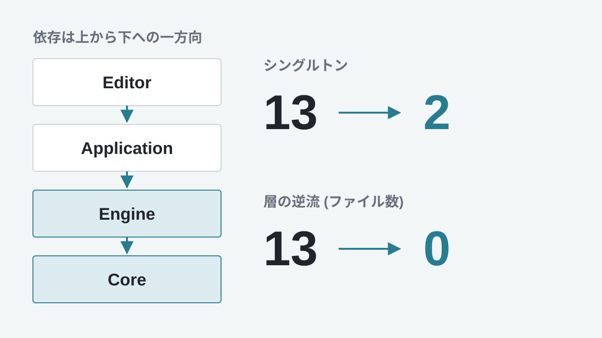

自作エンジン / 技術詳細
全体の設計
約18万行のエンジンを読みやすく直しやすい状態に保つための設計と、ゲームを作るための自作エディター、計測にもとづく改善の取り組みです。
01
概要
設計の考え方
動いたら終わりにせず、読みやすく直しやすい状態を保つことを大切にしました。層を分けて依存の向きをそろえ、規約を文書にし、依存図と数字で確かめながら直しています。現在の規模は 1,319 ファイル、約18万行です。
02
動作動画
エディターで作っている様子
03
層と依存
4層の構成

- 層の分離 : Core、Engine、Application、Editor に分け、下の層から上の層を参照しません。
- 窓口を通す : エンジンからは、エディターを
IDevToolとしてだけ見ます。 - 持ち主をはっきりさせる : 多くのマネージャーを持ち主の
unique_ptrにし、必要なものは引数のコンテキストで配ります。 - PCH の分割 : 層ごとにプリコンパイル済みヘッダーを分けました。
04
自作エディター
ゲームを作るための道具
主な機能
- ImGui(docking)製の統合エディターで、シーン、UI、エフェクトを作ります。
- シーンの編集とその場でのプレイ確認、エフェクトエディターとプレハブエディターを備えています。
- レンダーパイプラインとアニメーターは、共通化したノードエディターで編集します。
- アセットを依存からたどって集める、配布用パッケージの書き出しも持っています(アセット管理)。
05
コーディング規約
読みやすさを保つ決まり
命名、所有、依存、コメント、ECS、レンダーグラフなどの決まりを、約 890 行の文書にまとめました。
| 項目 | 決まり | ねらい |
|---|---|---|
| 命名 | 引数 a_、ローカル _、メンバ m_、static s_ | 変数の種類を名前から読めるようにする |
| 略語 | 定着した略語だけを許可リストにする | _texMgr のような独自の省略をなくす |
| Enum | enum class のみ。型名は E から始める | 書き方をそろえ、Enum だと名前から分かるようにする |
| Namespace | ディレクトリと対応させる | コードの置き場所を名前から分かるようにする |
| 所有権 | unique_ptr が基本。shared_ptr は理由があるときだけ | 誰が持ち主かをコードから読めるようにする |
| 依存 | Editor → App → Engine → Core の一方向。逆向きは禁止 | 層をまたぐ変更の影響を小さくする |
依存を見える形にしてから直す
- クラスの依存図を Excalidraw 形式で自動生成し、層の逆流、循環、どこからでも書ける状態の3つを直す対象にしました。
- 1フェーズ1テーマで進め、フェーズの終わりに起動、シーン読み込み、ゲームモードの往復、エディター操作を確認しました。
- 呼び出し回数をコマンドで数え、各フェーズの前後で記録しました。
残すものは理由を説明できるようにする
- シングルトンをゼロにすることは目的にせず、残す判断の基準を先に決めました。
- MainEngine : アプリの入口なので残しました。
- ResourceManager :
ResourceRef<T>が値としてアセットに埋まり、引数で渡せないので、入口として残しました。
AI で精査し、自分で直す
- 規約に合っているかの精査には AI(Claude Code)を使い、機械的に判定できる項目はスクリプトで全数を数えています。
- 精査した結果をもとに、自分で修正しました。大規模でも一括で変更できるものは、1か所だけ自分で直して手本にし、残りを AI に任せました。
06
計測と改善
数字で原因を特定する

- プロファイラー : 全体、スコープ、GPU、ECS、スレッド、パーティクル、VRAM をエディターで確認できます。
- HitchMonitor : 60FPS を割ったフレームの中身(処理時間、PSO 生成、同期読み込みなど)をファイルへ書き出します。
- プロファイラーと監視の機能は AI に作ってもらいました。
爆風のたびにカクつく
- 原因 : 判定で機体の判定メッシュの三角形を全部集めていて、機体のそばの爆発が1回 27 ms かかっていました。
- 修正 : 広い範囲の判定でボディを集めてから、ボディごとに最初の当たりで打ち切る形にしました。
大量の問い合わせを減らす
- 判定対象がない問い合わせは Jolt Physics へ行かずに返し、ボイドの大量の問い合わせを省いています。
カクつきの記録の例
HitchMonitor の実際の記録です。ホーム画面で 506.9 ms かかったフレームについて、何に時間を使ったかが分かります。
| 分類 | 内容 | 時間 |
|---|---|---|
| 段 | フレーム全体 | 506.9 ms |
| 段 | RGDraw | 469.45 ms |
| 出来事 | [PSO] RayReflectionCS | 27.21 ms |
| 出来事 | [Load] BGM の wav ファイル | 24.65 ms |
| 出来事 | [PSO] RayVolumeShadowCS | 18.60 ms |
07
成果と計測
数字で見る
| 項目 | 修正前 | 修正後 |
|---|---|---|
| 機体のそばの爆風判定(1回) | 27 ms | 0.05 ms |
| シングルトンの数 | 13 | 2 |
| シングルトンの呼び出し回数 | 629 | 77 |
| シングルトンを呼ぶファイル数 | 142 | 27 |
| 層の逆流(ファイル数) | 13 | 0 |
| D3D12 層の循環 | 1 組 | 0 組 |
| 監査の Critical | 18 | 0 |
| 監査の High | 439 | 23 |
理由のない shared_ptr | 35 | 0 |
| 独自の略語 | 60 | 0 |
シングルトンと循環は 2026年9月10日から10月9日まで、それ以外は 2026年10月の監査の修正前後の数字です。
動作確認環境 : Intel Core i7-14650HX(論理24スレッド)/ NVIDIA GeForce RTX 5060 Laptop GPU / メモリ 16 GB
08
主なコード
ソースと資料の場所
環境/Docs/CodingStandards.md環境/Docs/CodingRulesAudit.md環境/DependenceView/Source/Core/CorePCH.h ほか、層ごとの PCHEditor/Editor/Panel/ProfilerPanel/Engine/Time/HitchMonitor/Engine/Physics/PhysicsWorld.cpp
09
参考資料
参考にした資料
コーディング規約
10
ほかの技術を見る
自作エンジンの主な技術